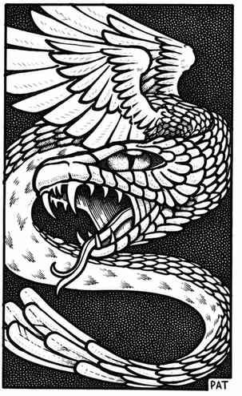

库奥托 · Couatl
 |
|
这些长有翅膀与羽毛的蛇形怪物，除了温暖的丛林地带或以太界之外，极少在其他地方出现。它们智慧卓越、能力非凡，故而故乡居民对它们敬畏有加，视其为神祇。库奥托很少干涉人类事务。它们能够改变自身形态，并可像 5 级魔法师和／或 7 级牧师一样施法：45% 使用魔法师法术，35% 使用牧师法术，20% 两类法术都会使用。近战时，它们会以带毒的啮咬（可进行豁免检定）和缠绕攻击；若缠绕命中，受害者每个近战轮及此后每轮都会受到 2–8 点伤害，直至其中一方死亡。
库奥托具有灵能意识，拥有 2 项主要学科与 4 项次要修习，并具备相应的攻击与防御模式。库奥托会说几种人类语言，以及大多数蛇类和鸟类语言。